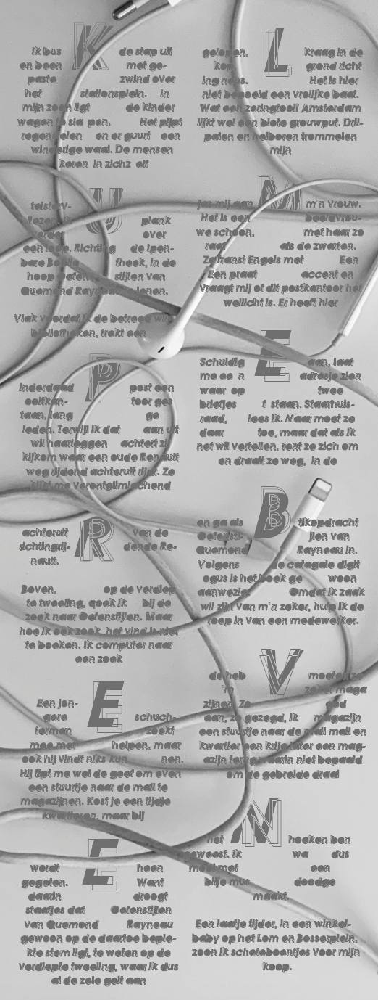
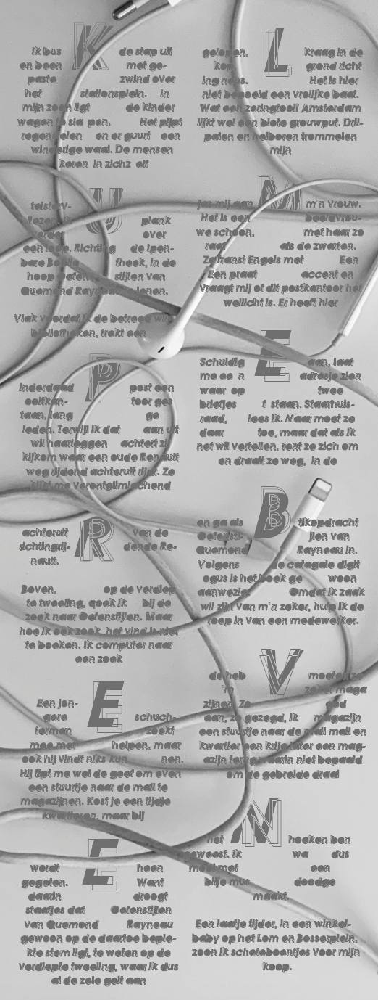

Assignment year 3: For the subject Design I had to give a small story a meaningful background. My story is named Klumperbeven and was very confusing and tangling to read. The sentences didn’t make any sense, so I tried to give the background and font the same effect. I think it turned out great and I made me learn how fun it can be to use real life objects in an Illustrator design.
 
